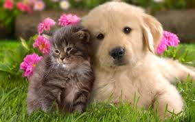

Cats and dogs are the most popular pets in the world. Those of us that enjoy our feline friends tend to be on the quiet side and have an inquisitive nature. Those of us who prefer the company of our canine companions are typically more social and extroverted. But no matter which type of person you are, we all LOVE our four legged family members equally!
This Website is dedicated to our furry friends, cats and dogs...
... and the reasons why we love them both!